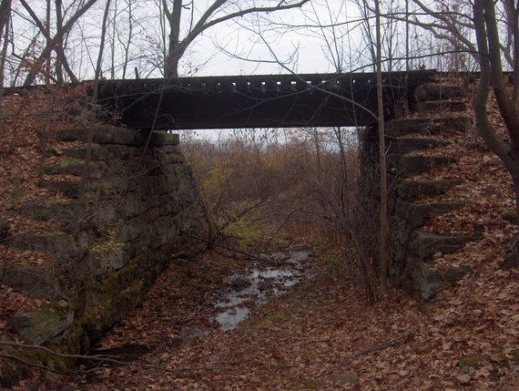

Крик под мостом
Получено: 1999-10-01 • Отправитель: Pittston, PA
|

|
Тема: Крик под мостом Саскон
Я из Пенсильвании, недалеко от Питтстона. Мост у Саскона знают все.
Осенью 97-го мы поехали туда вечером — проверить легенду.
Узкая дорога, сырой лес, высокий виадук над оврагом.
Мы дошли до середины и бросили камень. Он ударился о воду — и сразу из темноты раздался крик.
Женский голос, отчаянный, с хрипом. Не эхо. Мы застыли. Один убежал к машине.
Я остался на секунду и увидел белое пятно под аркой, как платье. Лицо, обращённое вверх.
Моргнул — и пусто. Больше туда не ездил.
Пару недель спустя сказали, что парень сорвался ночью с того моста.
|
⟵ назад к письмам
|